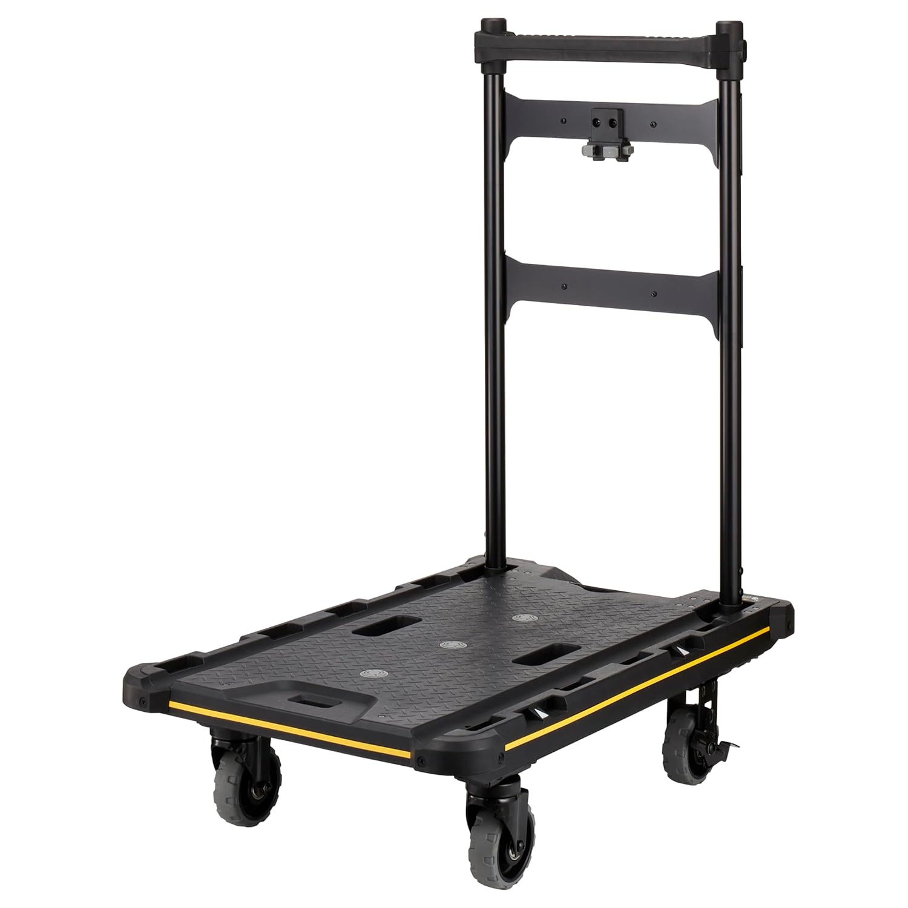
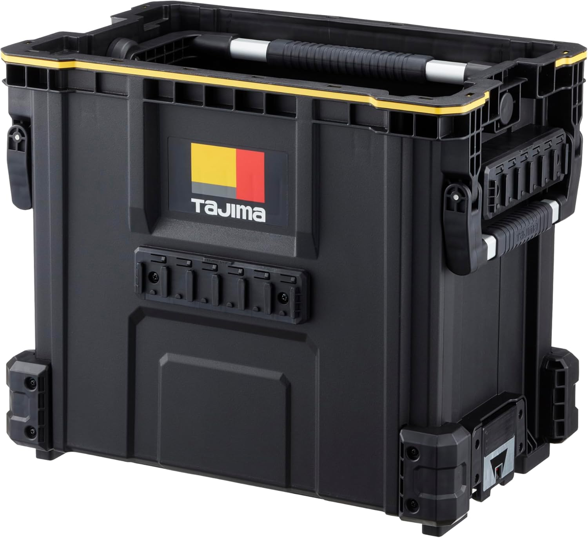
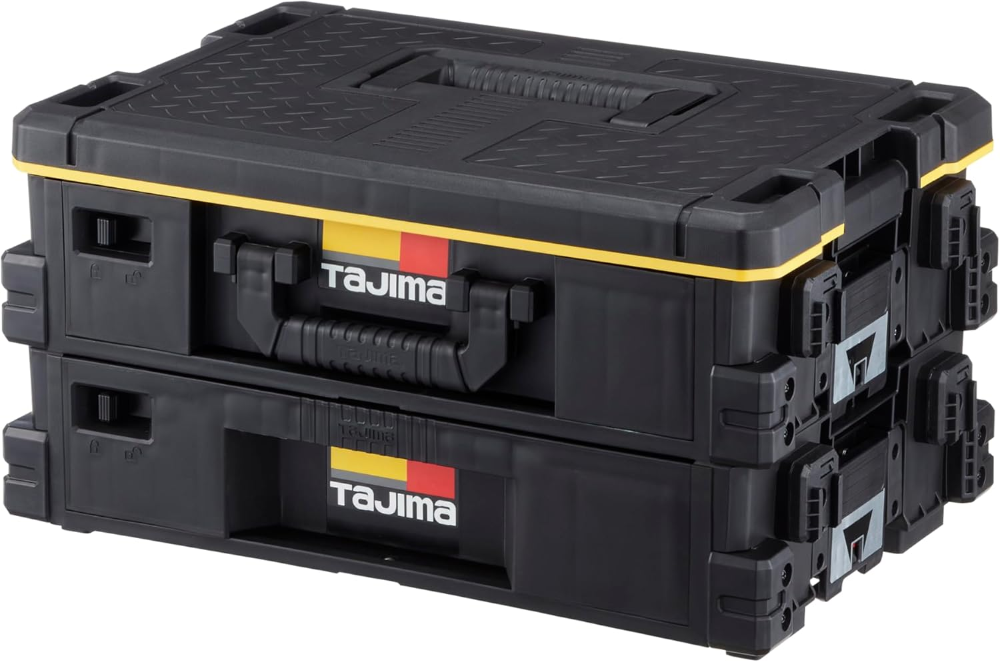
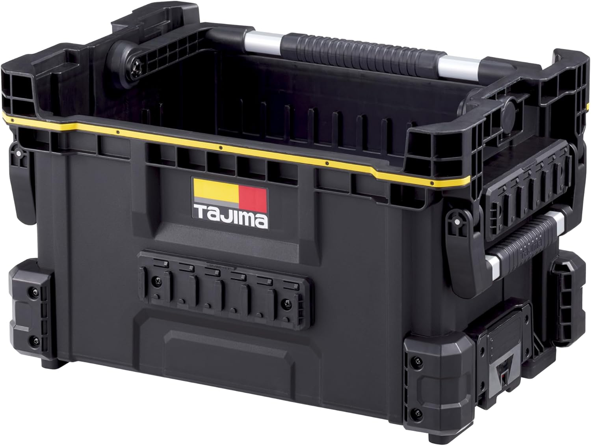
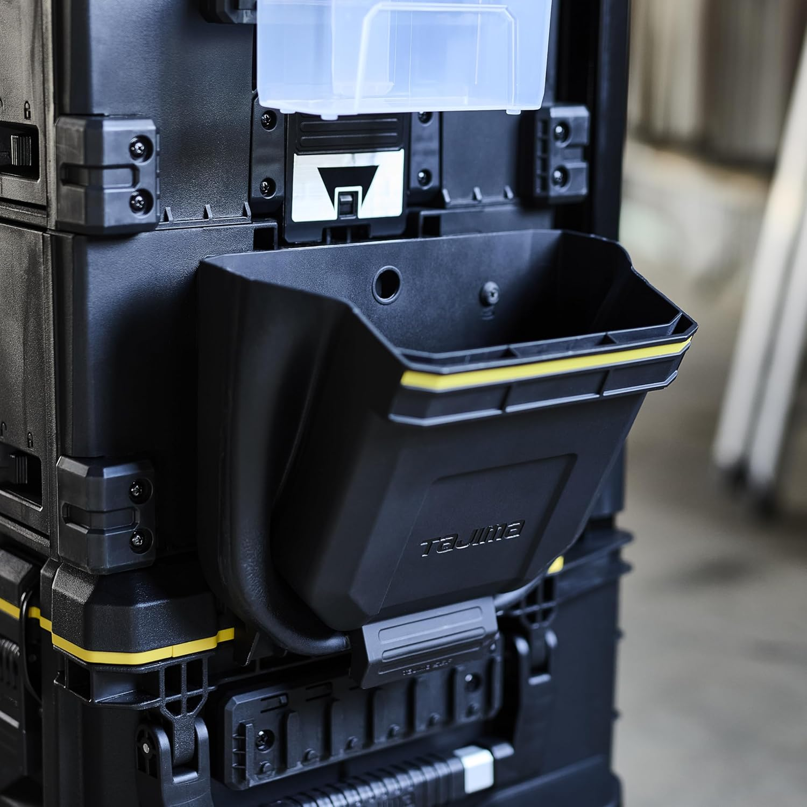

向いている人
- 現場への持ち込みを一回でまとめたい人
- 工具と部材を分けて崩れにくくしたい人
- セフシステムで収納まわりまで揃えたい人
タジマのセフボックスシリーズは、単品で見るより「どう運ぶか」「どう分けるか」「どう崩れにくく使うか」で考えると選びやすいです。
セフボックスシリーズは、工具箱単体で見ると似て見えますが、実際には役割が分かれています。
フタ付きで保管したいのか、上からすぐ取り出したいのか、細かい部材を分けたいのか、台車でまとめて運びたいのか。ここを先に決めると、選ぶべきモデルがかなり絞れます。
セフボックスシリーズは「一番良い箱」を探すより、「台車・ボックス・バスケット・引出し・ポケットをどう組み合わせるか」で考える方が実務的です。

先輩セフボックスは、箱単体より「どう運んで、どう使うか」で見ると分かりやすいよ。

新人ツールボックス、バスケット、引出しって、見た目だけだとどれから買うか迷います。
先輩まず土台を作るなら台車とツールボックス。作業中にすぐ取りたいならバスケット。小物を分けたいなら引出し、という感じだね。
まずは、各モデルを役割で分けて整理します。
セフ台車 CT-DHTOR。複数の箱やバスケットをまとめて運ぶ前提なら、土台として価値が出ます。
セフツールボックス TB-TBOX。フタ付きで、工具や測定器をまとめて保管したい人に向きます。
セフツールバスケット TB-TBSKH。上からパッと取り出せるので、作業テンポを優先したい人に合います。
セフ引出しボックス TB-HBOX2。端子・ビス・小物部材など、混ざると探しにくい物に向きます。
最初から全部そろえる必要はありません。荷物量が少ないなら小さめのバスケットSから始めるのもありです。
6商品は競合というより、役割が違います。現場で困っている内容から選ぶのがおすすめです。
| 商品 | 主な役割 | 向いている使い方 | 選ぶ目安 |
|---|---|---|---|
| CT-DHTOR | 運搬の土台 | 工具箱やバスケットをまとめて運ぶ | 現場への持ち込みを一回でまとめたい人 |
| TB-TBOX | 保管の主力箱 | フタ付きで工具や測定器をまとめる | まず1箱ちゃんとした箱を作りたい人 |
| TB-TBSKH | 出し入れ重視 | 手工具を上からすぐ取り出す | 作業テンポを優先したい人 |
| TB-HBOX2 | 小物・部材整理 | 端子・ビス・部材を分ける | 箱の中で小物が混ざる人 |
| TB-TBSKSH | 小さめ運用 | 荷物少なめ・小規模現場 | 大箱はまだ重いと感じる人 |
| TB-MPOR | 補助収納 | 手袋・スプレー・一時置きの追加 | 収納を少し足したい人 |
まずはTB-TBOXを主力箱として見て、運搬まで整えたいならCT-DHTORを追加。出し入れ重視ならTB-TBSKH、小物整理が課題ならTB-HBOX2を足すと分かりやすいです。
現行記事の商品画像とAmazonリンクを維持して、役割別に整理しています。

工具箱やバスケットを複数使うなら、シリーズ全体を活かす土台として見たいモデルです。
工具箱が何個かに分かれてくると、持ち込みと片付けで地味に時間を取られます。台車まで含めて考えると、運ぶ動きがかなり楽になります。
単体で便利というより、セフボックスを複数組んで使う人ほど価値が出やすいです。
工具と部材を分けて運びたい人、一回で現場へ持ち込みたい人、セフボックスを複数組んで使いたい人に向いています。

フタ付きでしっかりした箱が欲しい人には、一番ベースにしやすいモデルです。
工具や測定器、細かい物をまとめて持ちやすく、まず1個ちゃんとした箱を作りたい人に向いています。
台車と組み合わせると、保管と運搬の両方を整えやすくなります。
最初にメイン箱を1個作りたい人、フタ付きでまとめて保管したい人、台車と組んで使いたい人に向いています。

上からパッと取りたい物が多い人には、ボックスよりバスケットが合うことがあります。
フタ付き箱よりも、使う物が見えやすく出しやすいです。手工具を多く回す現場では、こういう形の方が楽なことがあります。
保管よりも作業テンポを優先したい人向けです。
上からすぐ取り出したい人、手工具中心で回す人、保管より作業テンポを重視する人に向いています。

端子、ビス、小物部材など、混ざると面倒な物が多い人に相性が良いモデルです。
大きい箱に全部入れると、結局探す時間が増えることがあります。引出し型があると、細かい物の定位置を作りやすいです。
工具箱というより、部材整理の悩みが強い人向けです。
部材や小物を分けたい人、パーツケースをよく使う人、工具より整理面で困っている人に向いています。

フルサイズの箱まではいらないけれど、セフ連結の便利さは使いたい人に見やすいモデルです。
いきなり大容量で固めるより、まずは小さめで始めたい人もいます。荷物を絞りたい現場では、このサイズ感が扱いやすいです。
大箱はまだ重いと感じる人にも向いています。
荷物を少し絞りたい人、小さめで始めたい人、大箱はまだ重いと感じる人に向いています。

大箱の代わりというより、足りない収納を少し足す感覚で見ると分かりやすいモデルです。
手袋、スプレー、よく使う小物など、箱の中にしまい込まず少し外に出したい物は意外とあります。
よく使う小物の置き場を作りたい時に、使い勝手を上げやすいです。
収納を少し足したい人、一時置きの場所がほしい人、腰回りや箱まわりを整えたい人に向いています。
写真だけだと分かりにくい人は、動画で重ね方・持ち方・セフシステム全体の考え方を見るとイメージしやすいです。
セフホルダーでどう着脱するのか、工具や収納をどうつなげて使うのかを先に見たい人向けです。
※セフって何が便利なのかを先に知りたい人に向いています。
台車・ツールボックス・バスケット・引出しボックスなど、シリーズ全体の違いをざっくり見たい人向けです。
※本文で気になったモデルを、実際の形や重ね方まで確認したい時に見やすい動画です。
最初からフルセットにしなくても大丈夫です。用途に合わせて、必要な組み方から始めると無駄が少ないです。
CT-DHTOR + TB-TBOX + TB-MPOR。運ぶ土台、主力箱、ちょい足し収納でバランスが良いです。
CT-DHTOR + TB-TBSKH + TB-HBOX2。上はすぐ使う工具、下は細かい部材で分けやすいです。
TB-TBSKSH + 必要ならTB-MPOR。小さめから始めて、必要に応じて足す考え方です。
TB-HBOX2を軸にして、工具箱とは別に小物の定位置を作ります。
新人最初は台車とツールボックスで土台を作って、必要に応じてバスケットや引出しを足す感じですね。
先輩そう。工具を守るならツールボックス、作業中に取り出しやすくするならバスケット、小物が散らかるなら引出しだね。
タジマのセフボックスシリーズは、どの箱が一番良いかよりも、現場での動き方に合わせて組むと選びやすいです。
しっかり保管したいならツールボックス、すぐ取りたいならバスケット、細かく分けたいなら引出し、まとめて運びたいなら台車で見ると整理しやすいです。
※当サイトはAmazonアソシエイト・プログラムに参加しており、適格販売により収入を得ています。